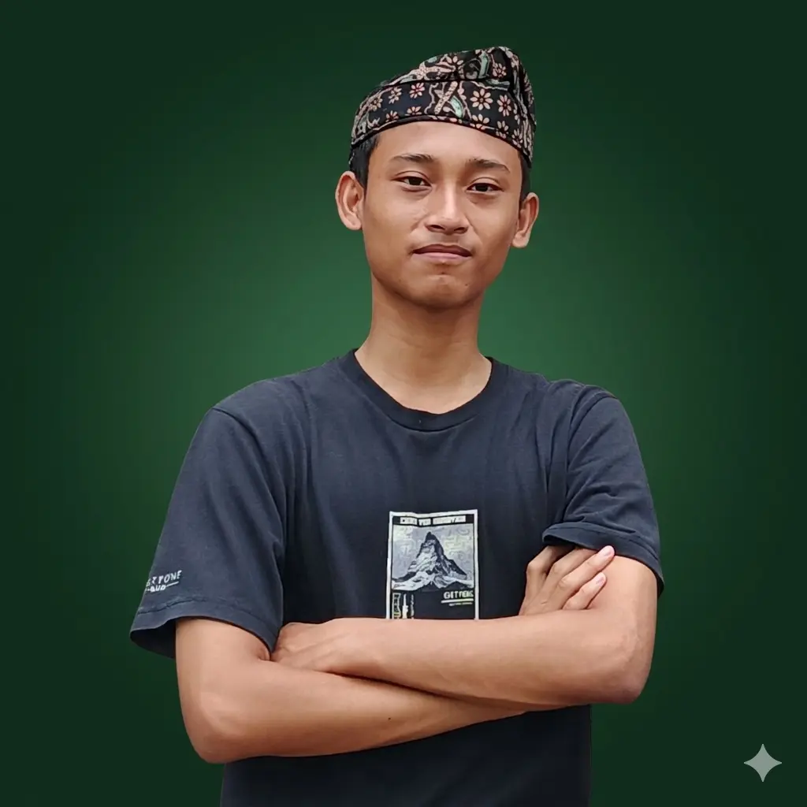

Halo, Saya
Artificial Intelligence & Tech Enthusiast
Passionate about logic, algorithms, and AI, with a focus on turning
ideas into efficient and meaningful digital solutions.

Saya memiliki ketertarikan mendalam pada teknologi informasi dan pemrograman web. Dengan dasar logika analitis yang kuat, saya terbiasa belajar mandiri (otodidak) mengenai arsitektur web dan pemrograman.
Saya juga aktif beradaptasi dan menggunakan alat bantu AI (Generative AI) untuk mempercepat produktivitas dan pemecahan masalah (troubleshooting).
kemampuan analisis algoritma yang kuat, pemecahan masalah berbasis komputer, serta ketelitian yang tinggi dalam kompetisi sains.
Mempelajari dan mempraktekkan pemrograman web dasar secara otodidak serta memanfaatkan prompt engineering pada AI untuk menyusun kerangka teknis dan arsitektur website.
Berperan aktif dalam kepanitiaan dan komunikasi organisasi. Berhasil memimpin kelas sebagai penanggung jawab tata letak memenangkan Juara 1 Lomba Kerapian & Estetika Tingkat Sekolah.
Aplikasi jadwal shalat berbasis web yang modern, ringan, dan responsif. Dibangun dengan estetika Material Design 3.
Lihat Repositori ➔Aplikasi manajemen keuangan personal yang sederhana, cepat, dan elegant berbasis web. Uangku membantu melacak pemasukan dan pengeluaran dengan antarmuka yang intuitif dan responsif.
Lihat Repositori ➔Aplikasi obrolan dengan tampilan modern, responsif, dan real-time yang terinspirasi oleh Telegram, dibangun dengan prinsip desain Material Expressive. Dibangun menggunakan AI tool Gemini-cli
Lihat Repositori ➔Aplikasi jurnaling harian untuk menumbuhkan kebiasaan menulis, lengkap dengan mood, arsip, dan komentar. SPA berbasis Vanilla JS dengan localStorage dan desain Material Design 3. Dibangun dengan Generative AI.
Lihat Repositori ➔